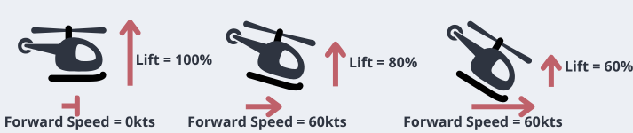
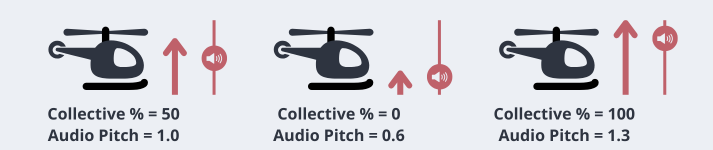
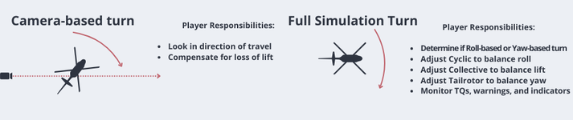

Faking Realism: The Sim-Lite Experience
Over many years playing flight simulators, I’ve noticed that there’s usually two types of games. On one hand, you have complicated games with a learning curve that demand practice, memorization, and patience. On the other hand, you have arcade games that are easy to pick up and play but have none of the depth that comes with the more involved sims. Both have merits but there aren’t as many of what I like to call “sim-lite” games that blend the two types into one. I wanted to post about this to not only explain the process I took, but to also draw attention to the importance of accessibility and simplicity in a genre that oftentimes prides itself in its difficulty.
Simplicity and Game Feel
With this design philosophy, how something feels to play is far more important than accuracy, but it’s important to allow the player to feel that they are controlling this heavy, complex machine. This simplicity isn’t laziness, it’s a recognition and respect of a player’s time; sometimes they just want to fly around and have fun without having to use a checklist. My solution to this was to not model actual flight simulation at all. What’s important to the player in this situation is the sensation, such as lift, momentum, sound, and control lag, and you can fake that with a bit of convincing math.

Imitating Physics - For example, instead of fully simulating blade physics to correctly generate lift, it’s a simple force that acts on the helicopter (pushes up) based on where the collective is positioned. The amount of “up” generated depends on how fast the rotor blades are turning, so at 100% RPM = 100% lift. And when the player uses the cyclic to steer, it’s a push towards the direction they tilt (with a reduction of lift based on how much they are tilting, which can be countered with more collective). There’s also control “lag” built into the player’s inputs, which reflect the fact that a helicopter has many parts, such as linkages, cables, and the rotor disk movement itself, that have to play catch up to the pilot’s inputs. It sounds kind of complicated, but it’s doing 5% or less of the math required to accurately model a helicopter.

Game Sound - Audio is also an extremely important part. Since I’m not modeling the pitch of the rotor blades, there isn’t a change of air pressure or engine response to the higher power required, so the sound of the rotor blades is simply adjusted to where the collective is and that provides clear and meaty feedback for how hard the helicopter is working to go where the player wants.

Player Control - The camera-facing control system trivializes the most complicated parts of controlling a helicopter, which was why I settled on this relatively simple system: The aircraft always faces where the camera is looking, so all the player has to do is look where they want the helicopter to settle itself. This is a deliberate action to open up this game to as many people as possible, and to empower the player to feel like they are driving without having to account for the dozens of micro and counter inputs that a helicopter pilot would need to do.
End Result - All this and more is why these simplified physics work so well on older hardware and with a controller. It’s a consistent experience that can be fine-tuned to death, so how my helicopters feel is a result of painstaking tuning on dozens of variables over many hours. If it doesn’t feel good, I don’t have to start a complex calculation from scratch, I just change a number or two until it feels better. These simplified calculations also lower system requirements significantly, so players can play the game on an old laptop, a Steam Deck, or a high-end computer, and get roughly the same experience.
Accessibility
I think RotorSim did a pretty good job at lowering the barrier of entry and letting more people experience flight simulation, but outside of making the game easier to play, I need to spend more time adding traditional accessibility options. Godot is getting better and there’s really no excuse for the next game to not have a more robust feature set.
- Better Controller Support with contextual UI
This isn’t limited to just more mature controller support, but also having in game control prompts, context-sensitive options, and making the remapping process as painless as possible. - Colorblindness Options
Ironic, because I have a form of deuteranomaly that affects my daily life, and I haven’t implemented anything into my games yet. I’m excited to change that. - Other Traditional Options
Options such as screen reading, visual sound cues, and UI size adjustment.
I believe very strongly in making games that are easy to run and easy to get started in, but it’s definitely a tricky thing to get right. If I can add these more common options and continue to listen to player feedback, I believe I will be able to make the most accessible and playable game possible.